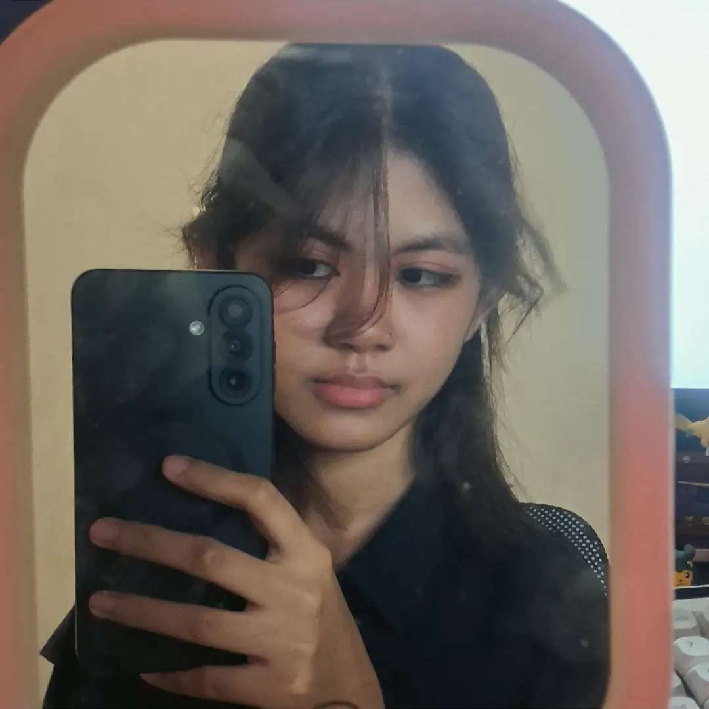

ABOUT ME

KIM !
8TEEN | 051908
Helloooo my name's Kim. I am a freelance artist
who does commissions for clients to bring their ideas to life.
Aside from that, I am
a quiet person who enjoys spending time alone to play games and listen to music when I'm not drawing.
I usually stay in my room to do my work and other things, otherwise I would be out wherever with my friends.
Contacts
My Path to Computing
Truth be told, it first started as an influence by my brother, since I was young. But as I grew older,
I began to develop an interest in online games, it peaked especially during the pandemic. I tend to play RPGs most of time which had tons of different
characters and classes to choose from. This genre made me like the fantasy genre in general, which made me want to create my own characters and stories.
I started drawing and writing my own characters and creating my own game concepts with the inspiration I got from the games I played. Game development
has always been one of the careers I wanted to pursue, that's why I took up IT in STI for senior high school.
Although I learned some things during my time at STI, I didn't have a strong enough passion for the programming side of the career. But I can draw. Now, I plan to build up my portfolio
and maybe try to make it as a concept artist for games in the near future. Computer Science is still the course I chose in college since I still want to
learn more about it, but in the end, I'll always stick to being an artist.
HOBBIES AND GOALS
Hobbies
- Digital Arts
- Gaming
- Listening to music
- Collecting
My Top 3 Goals
- Make it out as an artist
- Move out of the country
- Have a stable income
CLASS SCHEDULE
| Subject | Day | Time |
|---|---|---|
| CS 101: Introduction to Computing | W | 9:00 - 12:00AM |
| CS 102: Computer Programming 1 | MWTH | 4:00 - 7:00PM / 8:00 - 10:00AM |
| PHYS 1: Physics for Computing | TTH | 1:00 - 2:30PM |
| MATH101: Mathematical Analysis | TTHF | 2:30 - 4:00PM / 1:00 - 3:00PM |
| GEC11: Understanding the Self | F | 9:00AM - 12:00PM |
| PATHFit 1: Movement Competency Training | Sat | 4:00 - 6:00PM |
| NSTP 11: LTS | Sat | 1:00 - 4:00PM |
FAVORITES
Shows / Movies
- Victorious
- Legally Blonde
- White Chicks
Collecting
- Ball-Jointed Dolls
- Figurines
- Blind Boxes
REFLECTION
While creating my webpage, I used the knowledge I already know from my past years in high school, so it was relatively easy to create one from scratch, but I still searched up tutorials on how to do some parts and make it work. Generally, it was easy for me to understand since there was no JavaScript involved, which I would've implemented in my webpage if it was allowed. I didn't change much from my activity for this project aside from the required features in the criteria since it was already a decent base for me to start on and only improve some stuff. There are still a lot for me to improve on in web dev, but as long as I practice it, I'll be able to master it eventually.